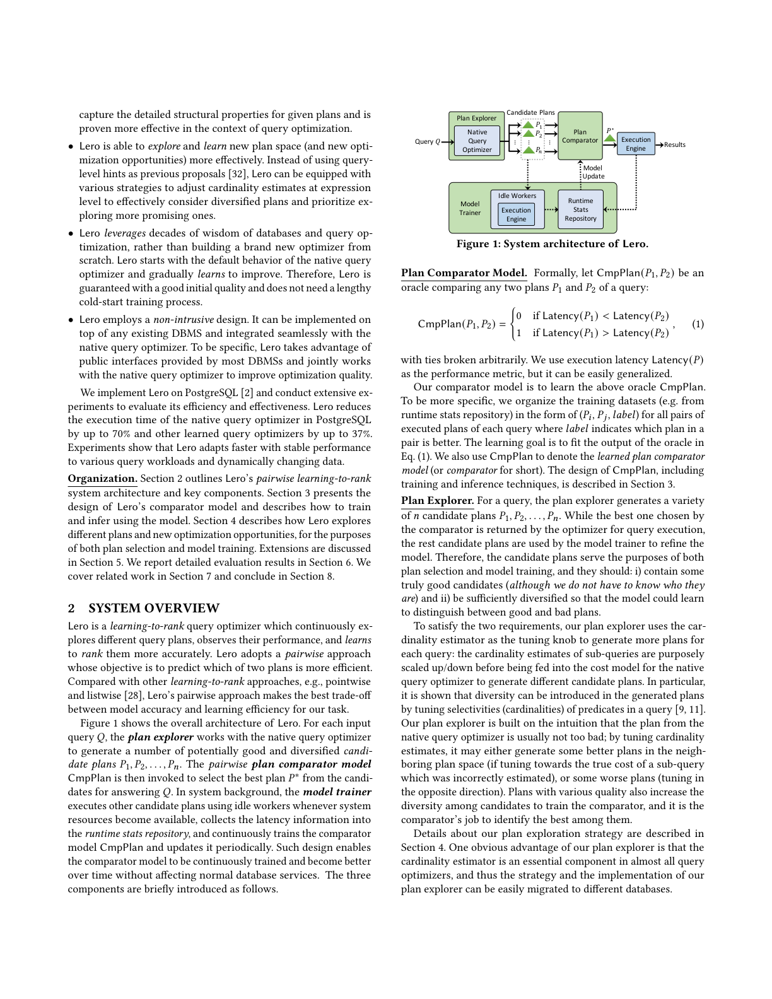
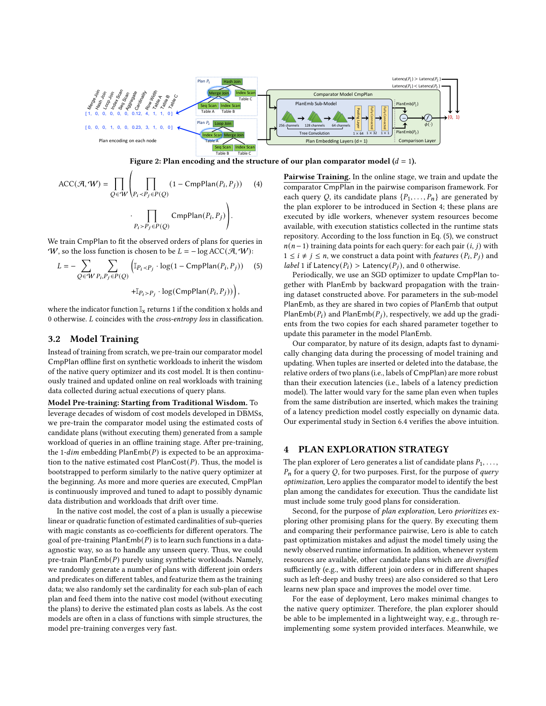
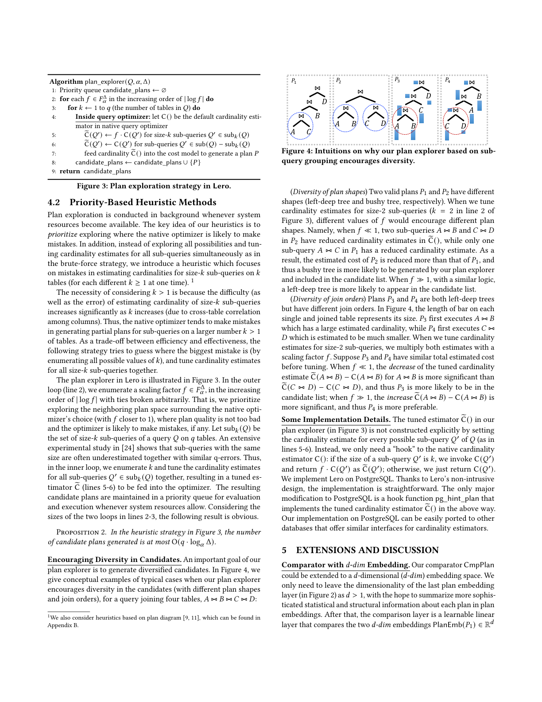
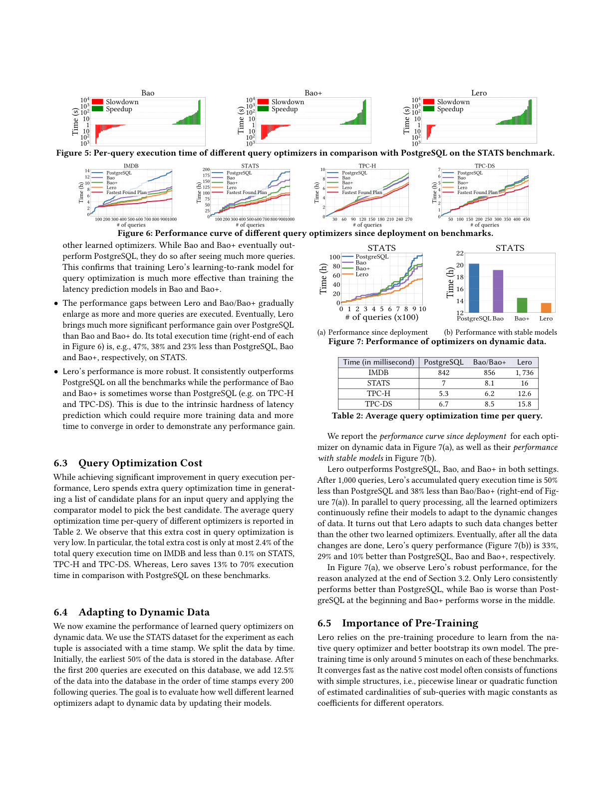
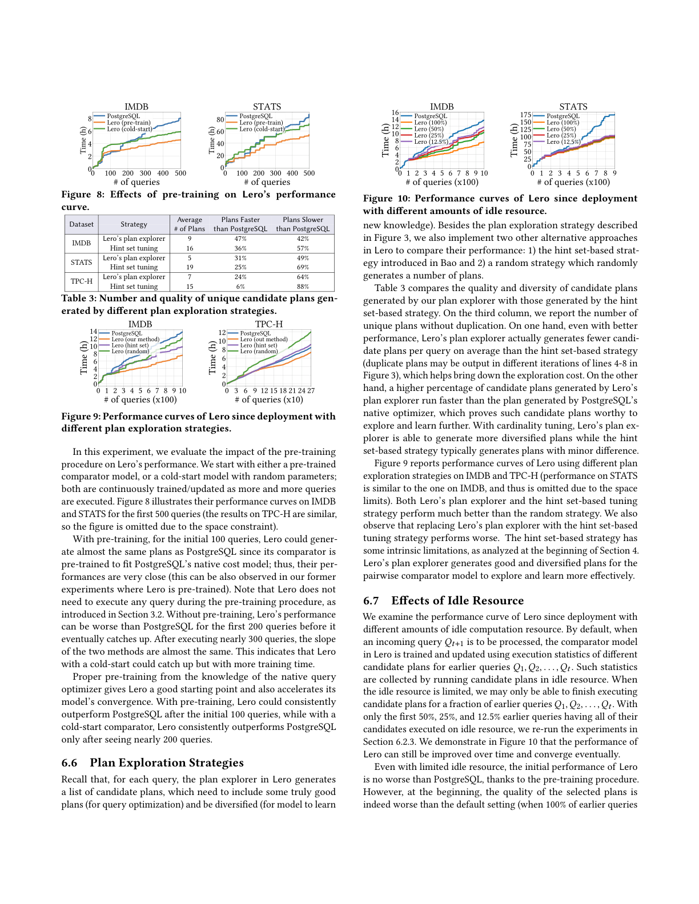

近期一系列工作应用机器学习技术来辅助或重建 DBMS 中基于代价的查询优化器。尽管在某些基准上展现出优越性，但它们的缺陷——如性能不稳定、训练成本高、模型更新慢——源于用机器学习模型预测执行计划的代价或延迟这一内在难题。本文中，我们提出一种学习排序的查询优化器，称为 Lero，它构建在原生查询优化器之上，并持续学习以改进优化性能。关键的观察是：对于查询优化而言，计划的相对次序（rank）而非确切的代价或延迟才是充分的。Lero 采用一种成对（pairwise）方法来训练一个分类器，以比较任意两个计划并判断哪个更好。与预测代价或延迟的回归任务相比，这种二分类任务在模型效率与准确性上都容易得多。Lero 并非从零开始构建学习型优化器，而是旨在利用数据库数十年的智慧并改进原生查询优化器。凭借其非侵入式（non-intrusive）设计，Lero 可以以最小的集成代价实现在任何现有 DBMS 之上。我们用 PostgreSQL 实现 Lero 并展示了其卓越性能。在实验中，Lero 将 PostgreSQL 中原生优化器的计划执行时间最多减少 70%，将其他学习型查询优化器最多减少 37%。同时，Lero 持续学习并自动适应查询工作负载与数据变化。
查询优化器在数据库中扮演着最重要的角色之一，旨在为每个查询选择一个高效的执行计划。改进其性能是一个长期存在的问题。传统的基于代价的查询优化器 [40] 寻找估计代价最小的计划，而该代价是执行延迟或其他用户指定资源消耗指标的代理。这类代价模型包含各种用于逼近实际执行延迟的公式，其魔法常数通过工程实践被详尽而广泛地调优。近期工作 [32, 33, 51] 用机器学习技术精炼传统的代价模型与计划枚举算法。尽管取得了一些进展，它们仍受制于由内在困难的延迟预测问题引起的缺陷。
本文中，我们提出 Lero，一种学习排序的查询优化器，其特性是一个用于查询优化的新型轻量级成对机器学习模型。Lero 采用非侵入式设计，对 DBMS 中现有系统组件的修改最小。Lero 并非从零开始构建，而是旨在利用查询优化器数十年的智慧，而无需额外（可能很大的）冷启动学习成本。Lero 能通过审慎地探索不同的优化机会并学习对它们更准确地排序，快速改进查询优化的质量。
传统的基于代价的查询优化器 [40] 有三个主要组件：基数估计器、代价模型与计划枚举器。对输入查询 $Q$，基数估计器可对每个子查询的基数（即输出元组数）进行估计。计划 $P$（带物理算子，如归并连接与哈希连接）的代价 $\text{PlanCost}(P)$ 是 $P$ 执行效率的代理，通常是 $Q$ 各子查询估计基数的函数。计划枚举器在搜索空间中考虑 $Q$ 的有效计划，并返回估计代价最小的那一个用于执行。
各种启发式在开发这些组件中至关重要。例如，假设跨表的属性间相互独立并用于估计多表连接的基数 [24, 45]；代价模型中普遍存在魔法常数，它们常经多年校准调优以在某些系统与硬件配置下使估计代价较好地匹配计划性能。人们认识到这类启发式对不同数据分布或系统配置并非总是可靠，因此代价模型可能产生显著误差，传统优化器生成的计划质量可能很差 [11, 16, 24, 45]。
用机器学习模型替代传统基数估计器、基于启发式的代价模型与计划枚举器是自然的思想。Neo [33] 与 Balsa [51] 提供端到端的学习型查询优化方案：受深度强化学习中价值网络启发，学习一个计划价值函数 $\text{PlanVal}()$ 来替代传统代价模型 $\text{PlanCost}$。Bao [32] 学习去引导原生查询优化器，用不同提示集生成多个候选计划，并用 ML 模型估计每个候选计划的质量，同时用 Thompson 采样周期性更新模型。尽管学习型优化器在某些应用中优于传统优化器 [37]，其性能远不令人满意，仍有三大缺陷：性能不稳定、学习成本高、模型更新慢。
我们认识到，传统与新型学习型优化器的缺陷都源于预测计划执行延迟或代价这一众所周知的难题。我们提出一个根本性问题：为了查询优化，我们真的需要估计/预测每个可能计划的执行延迟（或其他性能相关指标）吗？以寻找最佳执行计划为目标，训练一个 ML 模型去预测确切延迟（代价）是杀鸡用牛刀（overkill）。
本文中，我们引入学习排序查询优化器 Lero。本质上，查询优化所需的，是一个能就一组候选计划的执行效率对它们排序的学习型预言机（oracle）。传统代价模型本质上是"人类学习"模型，其参数（魔法常数）经数十年工程努力调优。在学习排序范式下，传统与学习型代价模型都可视为逐点（pointwise）方法 [28]——为每个计划输出一个序数分数（估计代价）以排序。Lero 采用有效的成对（pairwise）学习排序方法，而不丢弃开发传统代价模型与查询优化器中的人类智慧。我们的贡献如下：
我们在 PostgreSQL [2] 上实现 Lero 并进行了广泛实验：Lero 将 PostgreSQL 中原生优化器的执行时间最多减少 70%，将其他学习型优化器最多减少 37%，且能更快地适应各种查询工作负载与动态变化的数据。
Lero 是一种学习排序查询优化器，它持续探索不同的查询计划、观察其性能，并学习对它们更准确地排序。Lero 采用成对方法，目标是预测两个计划中哪个更高效。相比其他学习排序方法（逐点、列表式 [28]），Lero 的成对方法在我们的任务中在模型准确性与学习效率间取得了最佳权衡。

图 1 展示了 Lero 的整体架构。对每个输入查询 $Q$，计划探索器（Plan Explorer）与原生查询优化器协作生成若干潜在好且多样的候选计划 $P_1,P_2,\dots,P_n$。然后调用成对计划比较器模型 $\text{CmpPlan}$ 从中选出最优计划 $P^*$ 来回答 $Q$。在系统后台，模型训练器（Model Trainer）在系统资源可用时用空闲 worker 执行其他候选计划，将延迟信息收集到运行时统计仓库，并持续训练比较器模型 $\text{CmpPlan}$、周期性更新它。这种设计使比较器模型能被持续训练、随时间变得更好，而不影响正常数据库服务。三个组件简介如下：
计划比较器模型。 形式化地，令 $\text{CmpPlan}(P_1,P_2)$ 为一个比较查询任意两个计划 $P_1$、$P_2$ 的预言机：
我们以执行延迟 $\text{Latency}(P)$ 作为性能指标（但易推广）。我们的比较器模型即学习上述预言机，训练数据为 $(P_i,P_j,\text{label})$ 形式（label 指示一对中哪个更好），学习目标是拟合公式 (1) 的预言机输出。
计划探索器。 对查询生成多样候选计划 $P_1,\dots,P_n$，其中被比较器选中的最优者返回执行，其余用于模型训练。因此候选计划同时服务于计划选择与模型训练，应满足：i) 包含一些真正好的候选（尽管不必知道是谁）；ii) 足够多样以使模型能学习区分好与坏的计划。为此，我们的探索器使用基数估计器作为调节旋钮（knob）：在将子查询的基数估计送入代价模型前，有意地放大/缩小它们，以生成不同候选计划。
模型训练器。 对每查询，训练器在系统资源可用时执行探索器生成的其他候选计划，将其计划信息与执行统计加入运行时统计仓库，用于训练更新比较器。真实分布式系统中常因调度 [20] 或同步 [6] 存在空闲 worker；一些平台 [4, 37] 也提供性能测试的独立环境，可作为执行候选计划与收集统计的资源。
比较器 $\text{CmpPlan}$ 被训练/更新以拟合来自运行时统计仓库的训练数据集，后者持续监控查询执行并收集执行信息。
比较器 $\text{CmpPlan}(P_1,P_2)$ 的整体架构如图 2 所示，由计划嵌入层后接一个比较层组成。计划嵌入层精心设计与捕获查询计划的关键信息（表、算子、计划结构属性等）；比较层比较两个计划的嵌入（嵌入层输出的 1 维或 $d$ 维向量）并计算它们在计划质量上的差异。

计划嵌入层。 $\text{PlanEmb}$ 将 $P_1$、$P_2$ 从原始特征空间映射到一维（1-dim）嵌入空间。子模型 $\text{PlanEmb}$ 为每个计划 $P_i$ 生成嵌入 $\text{PlanEmb}(P_i)\in\mathbb{R}$。我们使用机器学习中的参数共享技术：两个嵌入由共享相同结构与可学习参数的两份 $\text{PlanEmb}$ 副本生成。Lero 构建于树卷积模型之上（类似 [32, 33, 36] 但有显著改进）：计划 $P$ 被特征化为向量树，每个子计划节点向量拼接了"最后操作的 one-hot 编码、基数估计、输出行宽、所触表的 0/1 编码"；对基数 $C(Q_j)$ 范围宽的，我们在特征向量中对 $\log(C(Q_j))$ 做 min-max 归一化。与先前方法 [32, 33] 不同，向量不包含估计代价（因其与基数、行宽强相关且可能引入额外不准确性）。树卷积用多个三角形滤波器在节点及其两个子节点上滑动，将计划变换为另一棵树，最终节点向量被展平送入神经网络生成嵌入。值得注意的是，先前工作用 ML 模型预测延迟，而我们的 $\text{PlanEmb}$ 与 $\text{CmpPlan}$ 的训练与使用方式不同——它提取关键信息供比较层比较两个计划；学习到的 1 维嵌入可解释为一种排序准则，其取值不受限于与延迟成比例，这种灵活性使模型更有效、更易训练。
比较层。 嵌入模型 $\text{PlanEmb}(\cdot)$ 与 $\text{CmpPlan}$ 通过计划的成对比较（二元标签指示每对哪个更好）一起学习。比较层将两计划嵌入之差 $x=\text{PlanEmb}(P_1)-\text{PlanEmb}(P_2)$ 送入逻辑斯蒂激活函数 $\phi(x)=(1+\exp(-x))^{-1}$，得到模型最终输出：
该输出在 $(0,1)$ 内，可解释为 $P_2$ 比 $P_1$ 更可取的可能性。由 $\phi(a-b)+\phi(b-a)=1$，比较器模型保持两个良好性质：i) 交换性：$\text{CmpPlan}(P_1,P_2)=1-\text{CmpPlan}(P_2,P_1)$；ii) 传递性：若 $\text{CmpPlan}(P_1,P_2)<0.5$ 且 $\text{CmpPlan}(P_2,P_3)<0.5$，则 $\text{CmpPlan}(P_1,P_3)<0.5$。因此比较器诱导出所有计划的全序，我们可选择 $P^*=\arg\min_{P_1\dots P_n}\text{PlanEmb}(P_i)$ 作为执行的最优计划。
损失函数。 $\text{CmpPlan}$ 的目标是最大化对任意两计划输出正确次序的可能性。设 $A$ 为基于模型输出 $\text{CmpPlan}(P_1,P_2)\in(0,1)$ 决定哪个更可取的（随机化）算法：
由交换性，$A$ 良定义。令 $P_1\prec P_2$ 表示 $\text{Latency}(P_1)<\text{Latency}(P_2)$。对所有查询训练数据 $W$ 与每查询候选计划集 $\mathcal{P}(Q)$，用 $A$ 比较所有计划对，其无错概率为：
我们训练 $\text{CmpPlan}$ 拟合 $W$ 中计划的观测次序，故损失函数取 $L=-\log\text{ACC}(A,W)$：
该损失与分类中的交叉熵损失一致。
我们并非从零训练，而是先在合成工作负载上离线预训练比较器模型 $\text{CmpPlan}$，以继承原生优化器及其代价模型的智慧；随后在实际执行计划收集的训练数据上在线持续训练与更新。
模型预训练：从传统智慧起步。 为利用 DBMS 中代价模型数十年的智慧，我们在离线阶段用候选计划的估计代价（不执行）预训练比较器。预训练后，1 维嵌入 $\text{PlanEmb}(P)$ 应近似原生估计代价 $\text{PlanCost}(P)$，使模型在初始时表现得类似原生优化器；随着更多查询被执行，$\text{CmpPlan}$ 被持续改进并适应可能动态漂移的数据分布。由于原生代价模型通常是估计基数的分段线性或二次函数（带魔法常数系数），可纯用合成工作负载预训练 $\text{PlanEmb}(P)$——随机生成不同连接顺序与谓词的计划作训练数据，将各子计划基数随机送入原生代价模型得到估计代价作标签，模型预训练收敛极快。
成对训练。 在线阶段，我们在成对比较框架中训练更新 $\text{CmpPlan}$。对每个查询 $Q$ 的候选计划 $\{P_1,\dots,P_n\}$，由空闲 worker 在执行统计收集后执行；按公式 (5) 的损失，我们为每查询构造 $n(n-1)$ 个训练点：对每对 $(i,j)$（$1\le i\ne j\le n$），若 $\text{Latency}(P_i)>\text{Latency}(P_j)$ 则特征 $(P_i,P_j)$ 标签为 1，否则为 0。周期性地，我们用 SGD 优化器通过反向传播更新 $\text{CmpPlan}$ 与 $\text{PlanEmb}$（共享参数梯度相加）。由于标签是计划的相对次序，它对动态数据比延迟预测模型更鲁棒——相同计划在相同分布新数据下的延迟也会变化，使延迟模型训练代价高昂。
Lero 的计划探索器为查询 $Q$ 生成候选计划列表 $P_1,\dots,P_n$，用于两个目的：第一，优化时应用比较器从候选中选最优执行计划，故候选列表须包含真正好的计划；第二，探索时优先探索其他有前景的计划，通过成对比较捕捉过去的优化失误并及时用新观测信息调整模型。同时，在资源可用时，也考虑充分多样的候选计划（如不同连接顺序或左深/稠密树等不同形状），使 Lero 学习新计划空间。
Lero 使用基数估计器作为计划探索器的调节旋钮。在原生基于代价的优化器中，输入查询各子查询的估计基数被送入代价模型以引导计划枚举与选择。每次用一个或多个子查询的不同基数估计，优化器就会为 $Q$ 选择不同计划。Lero 的探索器多次放大/缩小估计基数，以生成一列不同候选计划。令 $C()$ 为 DBMS 中原生基数估计器；探索器调用一个经调谐的估计器 $\tilde{C}()$ 替代 $C()$，从而生成不同计划。以基数估计器为旋钮的优势：第一，基数估计决定估计代价，从而决定连接顺序与物理算子，因此调谐基数极可能在相同资源预算下引入计划多样性；第二，基数调谐与平台无关，多数 DBMS 提供修改估计基数的系统接口，便于部署。
暴力探索策略。 令 $C^*()$ 为真实基数。对任意查询 $Q$，$C^*(\cdot)$ 与 DBMS 估计 $C()$ 之差未知，但用合理数量的调谐方式可确保至少一个调谐估计 $\tilde{C}()$ 在 q-error（定义为 $\text{QE}(e,t)=\max\{e/t,t/e\}$）意义上接近 $C^*()$。我们以指数变化的步长调谐：$F^\alpha_\Delta=\{\alpha^t\mid\lfloor-\log_\alpha\Delta\rfloor\le t\le\lceil\log_\alpha\Delta\rceil,t\in\mathbb{Z}\}$（公式 6）。对每个 $f=\alpha^t\in F^\alpha_\Delta$，设 $\tilde{C}(Q') = f\cdot C(Q')$，则至少存在一个 $f$ 使 $\text{QE}(f\cdot C(Q'),C^*(Q'))\le\alpha$。在 $[35]$ 的温和假设下，q-error 有界 $\alpha$ 的估计器下的最优计划不差于真实最优计划超过因子 $\alpha^4$。由此可得：
命题 1. 上述暴力探索策略生成的候选计划数至多为 $O(\log^{2q}_\alpha\Delta)$；在 $[35]$ 的温和假设下，其中至少一个不差于最优计划超过因子 $\alpha^4$。
但该方法开销过高（子查询数至少 $2^q$），生成的候选列表过长、对模型训练代价不可承受。我们提出更有效的启发式方法。

计划探索在系统资源可用时于后台进行，核心思想是优先探索原生优化器可能犯错之处。与暴力策略同时调谐所有子查询不同，我们的启发式聚焦于 size-$k$ 子查询（每次一个不同的 $k\ge 1$）的基数估计错误。图 3 展示了该探索器：外层（第 2 行）按 $|\log f|$ 递增枚举缩放因子 $f$（优先探索原生优化器选择附近的计划空间），内层枚举 $k$ 并统一调谐所有 size-$k$ 子查询的基数估计，结果放入优先队列待执行。由此得：
命题 2. 图 3 启发式策略生成的候选计划数至多为 $O(q\cdot\log_\alpha\Delta)$。
鼓励候选多样性。 图 4 给出典型例子：调谐 size-2 子查询基数时，不同 $f$ 会鼓励不同计划形状（稠密树 vs. 左深树）与不同连接顺序。实现上，探索器的调谐估计器 $\tilde{C}()$ 并非显式构造（设置每个子查询基数），而是对原生估计器 $C()$ 的一个"钩子（hook）"：若子查询大小为 $k$ 则返回 $f\cdot C(Q')$，否则返回 $C(Q')$。我们在 PostgreSQL 上实现 Lero，唯一主要修改是一个实现上述 $\tilde{C}()$ 的 pg_hint_plan 钩子函数，可轻松移植到其他提供相似接口的数据库。
带 $d$ 维嵌入的比较器。 我们的比较器可扩展到 $d$ 维嵌入空间：只需将最后嵌入层维度留为 $d>1$，比较层改为可学习的线性层比较两 $d$ 维嵌入并输出 0/1。详细分析见附录 A。
如何处理变化的资源预算。 传统上每查询被分配资源预算（如工作内存）。我们假设每计划执行资源预算恒定；原则上 Lero 可将资源预算信息作为比较器模型的输入特征，使计划可在不同资源预算下比较。该增强会带来模型训练挑战，留作未来工作。
我们开源了 Lero 实现 [2]，并实现了 Neo [33]、Bao [32] 及 Balsa 的开源实现。实验设置与关键问题如下：Lero 相对 PostgreSQL 原生及其他学习型优化器的改进（6.2、6.8 节）、优化成本（6.3 节）、对动态数据的适应性（6.4 节）；以及预训练收益（6.5）、探索策略有效性（6.6）、有限空闲资源下的表现（6.7）。
基准。 我们在 IMDB（JOB 负载 113 查询）、STATS（STATS-CEB 146 模板）、TPC-H（sf=10，模板 #3,5,7,8,9,10）与 TPC-DS（sf=10，23 模板）上评估。Neo 与 Balsa 需每个训练 epoch 用最新模型找计划，训练只能顺序进行，即使无限资源也极慢；在我们的数据集上训练 72 小时后（除原始 JOB 外）均未能匹配 PostgreSQL 原生优化器，故 6.2–6.7 节主要报告 Bao 与 Lero，6.8 节在 IMDB 原始 JOB 上比较 Balsa。我们还实现扩展版 Bao+（见证更多计划）。评估采用"时间序列切分"策略，学到的优化器只在早于当前查询的已见查询上训练。
表 1. 不同查询优化器的整体性能（执行时间，单位：小时）。
| 查询优化器 | STATS | IMDB | TPC-H | TPC-DS |
|---|---|---|---|---|
| PostgreSQL | 20.19 | 1.15 | 0.94 | 1.68 |
| Bao | 15.32 | 0.47 | 1.17 | 1.55 |
| Bao+ | 13.85 | 0.41 | 0.89 | 1.57 |
| Lero | 11.32 | 0.35 | 0.74 | 1.47 |
| Fastest Found Plan | 10.73 | 0.19 | 0.72 | 1.39 |
Lero 超参数设基数调谐因子 $\alpha=10$、q-error 上界 $\Delta=10^2$，故缩放因子集 $F^\alpha_\Delta=\{10^{-2},10^{-1},1,10,10^2\}$。Bao/Bao+ 使用相同的 48 个提示集族。
6.2.1 稳定模型下的性能。 表 1 报告各优化器完成所有基准测试查询的性能。Lero 整体最佳：相对 PostgreSQL 原生优化器，在 IMDB、STATS、TPC-H、TPC-DS 上执行时间分别减少 70%、44%、21%、13%；相对 Bao 分别减少 26%、25%、37%、5%；相对 Bao+ 在三个基准上仍少约 20%。这验证了学习排序范式与成对比较器的有效性，以及 Lero 探索器能生成更好更多样的计划。

6.2.2 性能改进/退化分析。 图 5 比较 STATS 上 146 个测试查询的逐查询执行时间。Lero 仅 9 个查询（6.2%）变慢（超 1 秒），而 33 个显著加速；Bao 与 Bao+ 各自导致 29 个查询退化，甚至多于它们能改进的查询数。Lero 退化时相对减速也小得多（STATS 上最大减速 246s，相对退化 5.2%；Bao 最大 1276s，相对 46.5%）。
6.2.3 自部署以来的性能曲线。 图 6 显示：Lero 在 IMDB 看 200 个、其余看 100 个查询后即稳定优于 PostgreSQL 与其他学习型优化器；Bao/Bao+ 需看更多查询才超越 PostgreSQL。Lero 与 Bao/Bao+ 的性能差距随查询执行增多逐渐拉大，最终在 STATS 上相对 PostgreSQL、Bao、Bao+ 的总执行时间分别少 47%、38%、23%。Lero 性能更鲁棒，在所有基准上一致优于 PostgreSQL，而 Bao/Bao+ 有时更差。
Lero 在生成候选计划列表并应用比较器选最优时花费额外优化时间。表 2 报告每查询平均优化时间：该额外成本极低，在 IMDB 上至多占总执行时间的 2.4%，在 STATS/TPC-H/TPC-DS 上低于 0.1%，而 Lero 在这些基准上节省了 13%–70% 执行时间。
表 2. 每查询平均查询优化时间（毫秒）。
| PostgreSQL | Bao/Bao+ | Lero | |
|---|---|---|---|
| IMDB | 842 | 856 | 1736 |
| STATS | 7 | 8.1 | 16 |
| TPC-H | 5.3 | 6.2 | 12.6 |
| TPC-DS | 6.7 | 8.5 | 15.8 |
我们用 STATS（每元组带时间戳）评估动态数据：初始存最早 50% 数据，每 200 个查询按时间戳加入 12.5% 数据。图 7 显示 Lero 在两种设置下均优于 PostgreSQL、Bao、Bao+；1000 个查询后累计执行时间比 PostgreSQL 少 50%、比 Bao/Bao+ 少 38%。最终 Lero 性能分别比 PostgreSQL、Bao、Bao+ 好 33%、29%、10%。仅 Lero 一致优于 PostgreSQL（Bao 初期更差，Bao+ 中期更差）。

Lero 依赖预训练从原生优化器学习并更好地引导自身模型。预训练时间每基准仅约 5 分钟，收敛快（原生代价模型常为结构简单函数）。图 8 显示：预训练的初始 100 个查询 Lero 生成与 PostgreSQL 几乎相同的计划；冷启动则在前 200 个查询可能更差，约 300 个查询后才赶上。预训练给了 Lero 良好起点并加速收敛。
表 3. 不同计划探索策略生成的唯一候选计划数量与质量。
| 数据集 | 策略 | 计划数 | 快于 PostgreSQL | 慢于 PostgreSQL |
|---|---|---|---|---|
| IMDB | Lero 探索器 | 9 | 47% | 42% |
| IMDB | 提示集调谐 | 16 | 36% | 57% |
| STATS | Lero 探索器 | 5 | 31% | 49% |
| STATS | 提示集调谐 | 19 | 25% | 69% |
| TPC-H | Lero 探索器 | 7 | 24% | 64% |
| TPC-H | 提示集调谐 | 15 | 6% | 88% |
除图 3 策略外，我们还实现两种替代：Bao 的提示集策略与随机策略。表 3 比较候选计划质量与多样性：Lero 探索器平均生成的唯一计划数更少（降低探索成本），但其中快于 PostgreSQL 原生计划的比例更高，证明这些候选值得探索学习。图 9 显示 Lero 探索器与提示集策略都远优于随机策略，且替换为本探索器比提示集策略更好。
图 10 显示：即使只有 12.5% 早期查询的候选计划被空闲资源执行探索，模型在 IMDB/STATS 上分别约 500/200 个查询后收敛。有限空闲资源会减慢学习与收敛，但对 Lero 最终性能影响很小。
我们在 IMDB 原始 JOB 负载上比较 Lero 与 Balsa（随机切分与"最慢 19 个查询"切分）。表 4 显示：Balsa 匹配或略优于 Bao，但即便在其模型被充分训练后，仍劣于 Bao+ 与 Lero。
表 4. IMDB 原始 JOB 上各学习型优化器相对 PostgreSQL 原生优化器的加速比。
| Random Split | Slow Split | |||
|---|---|---|---|---|
| Train | Test | Train | Test | |
| Bao | 1.62 | 1.49 | 1.17 | 1.05 |
| Bao+ | 2.93 | 1.58 | 4.01 | 1.74 |
| Balsa | 2.46 | 1.55 | 1.23 | 2.31 |
| Lero | 3.54 | 1.59 | 4.38 | 1.34 |
学习优化查询。 近期大量工作将 ML 应用于查询优化 [58]：多数聚焦学习型基数估计（查询驱动 [12,22,27] 或数据驱动 [18,45,50,52,53,59]）；其他精炼传统代价模型与计划枚举（[41]、[55,57] 用 TreeLSTM/卷积学代价；计划枚举建模为 RL 选连接顺序 [17,23,44,54]）。这些只优化单个组件，未必改善整体性能。端到端方案 [33,51] 与提示集引导 [32] 仍受预测代价/延迟的缺陷所累。Lero 基于计划探索与成对比较，学习计划对之间的差异并改进端到端优化质量。
学习排序范式。 Lero 遵循学习排序范式 [21,28,47]，可分为逐点 [14,26]、成对 [13,29] 与列表式 [38,42]。据我们所知，我们是首个将成对学习排序范式应用于构建学习型查询优化器的工作。
学习调优索引。 索引调优 [3,5,46] 需在预算下找最优索引集，其查询级搜索可视为学习排序在索引调优中的应用 [10]。但与 Lero 有两点根本不同：索引调优器在搜索中调用成对比较器判断新索引配置下计划是否改进；而 Lero 为完全不同的任务（查询优化）配备了精心设计的计划探索器与比较器，协同探索计划空间。
我们提出 Lero，一种学习排序的查询优化器。第一，Lero 将学习排序机器学习技术应用于查询优化——我们主张为查询优化而开发预测确切执行延迟或基数的机器模型是杀鸡用牛刀；Lero 转而采用成对方法训练二分类器比较两个计划，被证明更高效有效。第二，Lero 利用数据库研究数十年的智慧，与原生优化器协作改进优化质量。第三，Lero 配备计划探索策略，能更有效地探索新的优化机会。最后，我们在 PostgreSQL 上的广泛实现评估展示了 Lero 在查询性能上的优越性，以及适应变化数据与工作负载的能力。